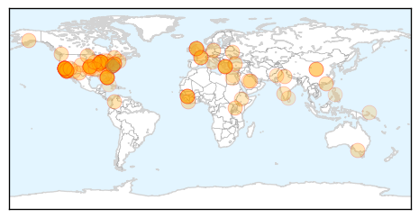

Unknown
30-Day Web Trend
0 alerts, 0 warnings

30-Day Twitter Trend
0 alerts, 0 warnings

Article Locations
Article Confidences
Top Articles:
- 0.993
- Serious respiratory illness hits hundreds of young children; CDC trying to pin down cause
- 0.987
- Saudi Arabia suspends leaves in heightened effort to combat MERS - Xinhua
- 0.986
- Uganda confirms Typhoid outbreak
- 0.985
- Enterovirus Confirmed In B.C. But No Need To Panic
- 0.980
- Public Health England reports scarlet fever spike across Midlands
- 0.972
- Officials begin testing babies who may have been exposed to tuberculosis at Texas hospital
- 0.958
- Worst flu season on record, but no new deaths in Tulsa County
- 0.950
- 'Superbug' outbreak raises questions about medical tool
- 0.941
- 2 dead, over 170 potentially exposed in 'superbug' outbreak
- 0.941
- Rare respiratory illness sends hundreds of kids in U.S. to hospital
- 0.939
- Superbug linked to deaths at UCLA hospital
- 0.936
- 179 People May Have Been Exposed To Potentially Fatal Bacteria
- 0.928
- FDA Warns on Medical Device After Superbug Outbreak
- 0.926
- Deadly CRE Germs Linked to Hard-to-Clean Medical Scopes
- 0.924
- Enterovirus D-68 could be cause of surge of admissions at Ontario hospital
- 0.918
- Enterovirus D-68: are B.C. kids at risk?
- 0.917
- Chicago Tribune
- 0.917
- Chicago Tribune
- 0.917
- Chicago Tribune
- 0.917
- Chicago Tribune
- 0.917
- Chicago Tribune
- 0.917
- Chicago Tribune
- 0.917
- Chicago Tribune
- 0.917
- Chicago Tribune
- 0.917
- Chicago Tribune
- 0.917
- Chicago Tribune
- 0.917
- Chicago Tribune
- 0.917
- Chicago Tribune
- 0.917
- Chicago Tribune
- 0.917
- Chicago Tribune
- 0.917
- Chicago Tribune
- 0.917
- Chicago Tribune
- 0.917
- Chicago Tribune
- 0.916
- Ottawa hospital treats 4 kids for enterovirus D68, expects more cases
- 0.914
- Superbug linked to 2 deaths at UCLA hospital; 179 potentially exposed
- 0.914
- Superbug linked to 2 deaths at UCLA hospital; 179 potentially exposed
- 0.913
- 'Superbug' Outbreak at California Hospital, More Than 160 Exposed
- 0.907
- 179 possibly infected with deadly 'superbug' bacteria at UCLA Medical Center
- 0.902
- ‘Nightmare’ superbugs kill half of patients who contract them
- 0.899
- 2 deaths possibly linked to 'superbug' at UCLA hospital after 7 infected, 179 exposed
- 0.898
- What Is the 'Superbug' Infecting UCLA Patients?
- 0.897
- The scary rise of the latest superbug
- 0.893
- What to Know About the CRE 'Superbug' Infecting UCLA Patients
- 0.889
- 'Superbug' Outbreak At UCLA Medical Center: Here's What We Know - Story
- 0.889
- 'Superbug' Outbreak At UCLA Medical Center: Here's What We Know - Story
- 0.882
- Superbug outbreak at UCLA 'not a threat to public health,' officials say
- 0.882
- Superbug outbreak at UCLA 'not a threat to public health,' officials say
- 0.874
- LA hospital superbug: Dozens may have been exposed
- 0.865
- FDA warns medical scopes linked to 'superbug' outbreak
- 0.862
- At least seven sickened by 'superbug' bacteria at Los Angeles hospital
Showing top 50 articles...
Top Tweets:
- 0.704
- RT: What health care workers can do to prevent Middle East respiratory syndrome infection MERS http://t.co/o1iCnlCf0c
- 0.557
- Is it the flu or is it a cold? Symptoms such as fever, body aches, tiredness, and cough are more common and intense with the flu.
Pertussis
30-Day Web Trend
8 alerts, 6 warnings

30-Day Twitter Trend
0 alerts, 0 warnings

Article Locations

Article Confidences
Top Articles:
Top Tweets:
-
No tweets found for Feb 19, 2015